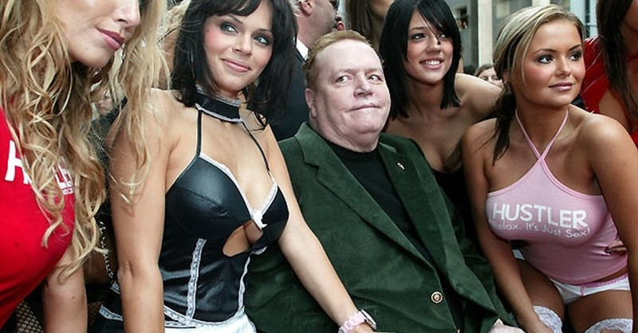

Larija Kinga šovs
KĀ MILJARDIERI ĀRSTĒ IMPOTENCI
Erektīlā disfunkcija ir problēma, kas nav saistīta ar ienākumu līmeni: tu esi vai nu vesels, vai nē. Nauda kabatā, neietekmē locekli. Vai parasts vīrietis varēs izmantot miljardiera noslēpumu, lai iegūtu akmenscietu erekciju?
'Sekss ir lieliska nodarbība, pat vecumā. Pats zinu', – Lerijs Flints.
Lerijs Flints – miljardieris, pornožurnāla Hustler izdevējs un sava laika leģenda. Ar viņa palīdzību sākās seksuālā revolūcija ASV un Eiropā. Striptīza klubu tīkls, 5 sievas, modeļu sabiedrība – ne dzīve, bet pasaka, vai ne?
Pirmo reizi Lerija Kinga šovs attālinās no televīzijas rāmjiem!
ir Pienācis laiks
visapslēptākajiem jautājumiem!


– Lerij, jūs esat viens no skandalozākajiem cilvēkiem porno industrijā. Jūsu žurnāls Hustler kļuva par īstu sasniegumu! Jūs vairākkārt sūdzēja tiesā par morālo sabrukumu, bet izgājāt sauss no ūdens. Kā tā gadijās?
– Visu mūžu uzskatīju, ka sekss ir dabiska lieta un tur nav ko kautrēties. Nu kas pretlikumīgs ir uzbudinājumā? Tiesās es vienkārši aizstāvēju savu viedokli. Mans žurnāls ir saistīts ar manu vismīļāko nodarbību – seksu. Es devu priekšroku nevis strādāt birojā, bet gan nodarboties ar to, kas man patīk.
– Jūs bijāt precējies 5 reizes, guvāt ievainojumu, kļūstot par invalīdu, bet turpinājāt uzsākt neskaitāmus romānus. Runāsim atklāti: meitenes piesaista izmēru jūsu... maka izmērs?
– Man ir ar ko lepoties, un izņemot naudu. Agrāk es regulāri biju klāt žurnāla modeļu filmēšanas laikā. Bija uzbudināts gandrīz vai katru minūti. Man nemitīgi gribējās pāroties ar puskailām skaistulēm. Laiku pa laikam es ņēmu par sievu karstākās sievietes. Bet nevienas no tām nebija pietiekami, lai apmierinātu manas vēlmes pilnībā.

– Gribat teikt, ka viņu seksuālā aktivitāte bija zemāka nekā jūsu?
Jā, es viņas burtiski drāzu līdz pusģībonim. Un nekādi miljoni nenoturēja mūs kopā. Man vienmēr viss bija augstākajā līmenī, bet pēc tam, kad sērijveida slepkava ievainoja mani, skarot kājstarpi, sākās problēmas ar seksu.
Es vienmēr biju operācijās, lai atjaunotu loceklis pilnībā. Tā pagāja ilgi gadi. Ar laiku misēkļu kļuva vairāk: pēc traumas loceklis varēja sacelties ar 2.-3. reizi, bet ar gadiem erekcija gandrīz pazuda. Labākajā gadījumā, tas sākās pēc stundas-pusotras sieviešu glāstu.

Atceros vienu gadījumu: filmēšanas laikā man iepatikās modele, es pasauca viņu pie sevis uz ģērbtuvi pārtraukumā. Es pusstundu mēģināju iebāzt viņā locekli, bet tas visu laiku krita. Mums nekas nesanāca. Tā kuce pasmējās un teica, ka es lietoju maku locekļa vietā un ar to apmierinu sievietes.
Jutos ļoti nomākts. Brīvdienās braucu ar biznesa partneri ārpus pilsētas, tur iedzērām, es izstāstīju par savu problēmu. Viņš man teica, draugs, tu neesi mēģinājis? To visi veči dzer ar tādām problēmām. Zināt, es tad par viņu pasmējos: man ārsti nevar palīdzēt, bet viņš man savas kapsulas piedāvā. Bet pats domāju. Un ja nu tiešām palīdzēs?

– Kā viss beidzās?
– Es padomāju, ka varbūt šī ir mana pēdējā iespēja. Sazinājos ar savu ārstu, viņš man deva šī preparāta pētījumu rezultātus. Tas bija šokējoši: lielākā daļa vīriešu uz visiem laikiem atbrīvojās no impotences bez kaitējuma veselībai un operācijām!
– Šis preparāts kaut kas līdzīgs Viagrai?
– Ko jūs! Es kaut kā aiz muļķības paņēma sev Viagru izmēģināt. Vakarā iedzēru tableti, un nākamajā dienā briesmīgi sāpēja loceklis, sākās temperatūra un jutos pretīgi. Es pat baidījos, ka nāksies izsaukt ārstus. Jā, es staigāju ar erekciju, bet es nevarēju pieskarties loceklim:tas sāpēja.
– Es jums pastāstīšu savu stāstu, bet jūs seciniet paši. Es pasūtīju sev ražotāja oficiālajā mājas lapā. Pirmo nedēļu vispār neko neievēroju, un pēc tam no rīta pamodos un skatos – sacēlies! Kā jaunībā! Es saņēmos un piezvanīju modelēm. Briesmīgi uztraucos: ja nu neizdosies, un loceklis nokritīs seksa laikā? Ieradās divas meitenes, es biju pavisam šokēts, domāju, ka ar vienu atliku likām pietiks, bet te divas izpist vajag! Galu galā, mēs drāzāmies stundas trīs noteikti, meitenes bija septītajās debesīs no laimes! Un tik daudz kliedzienu un spiedzienu es nebiju dzirdējis vēl nereizi!

Droši vien preparātam ir kādas blakusparādības?
– Pilnīgi nekādas! Darbojas nevainojami, tas ir pārbaudīts personīgi. Tam ir lielisks sastāvs, visi ārsti apstiprina. var dzert pat ar alkoholu: tajā vispār nav ķīmijas, tikai dabīgas sastāvdaļas. Turklāt tās ir tik labi izvēlētas, ka ne vien uzlabo erekciju, bet arī atjauno to. Pat tādos bēdīgos gadījumos, kā man.
– Skan fantastiski! Un kur iegādāties ?
Tagad var nopirkt tikai oficiālajā mājas lapā, un tāpēc tā cena ir tik zema.
Ja palīdzēja man, tad tas palīdzēs ikvienam, esmu pārliecināts. Un lai jūs varētu pārliecināties par maniem vārdiem praksē, es samaksāju par10000 iepakojumiem, lai tavi skatītāji varētu iegādāties to par puscenu.